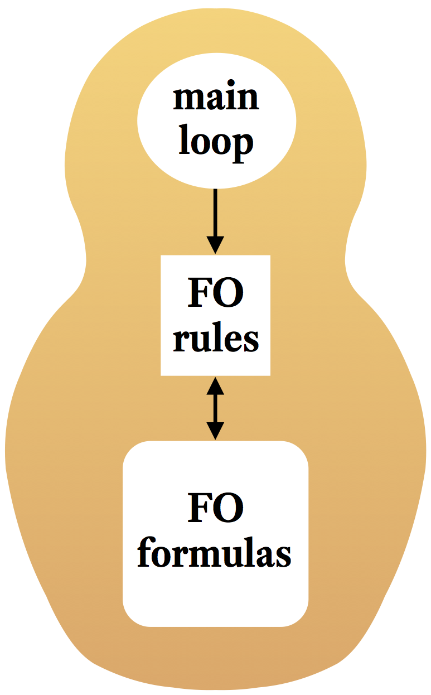

Fast Interactive Verification through Strong Higher-Order Automation
Fast Interactive Verification through Strong Higher-Order Automation

| European Research Council (ERC) Starting Grant 2016 |
| Grant agreement No. 713999 | |
| March 2017 – February 2022 | |
| Principal investigator: | Jasmin Blanchette, Vrije Universiteit Amsterdam |
| Senior collaborators: | Pascal Fontaine, Université de Liège Stephan Merz, Inria Nancy Stephan Schulz, DHBW Stuttgart Sophie Tourret, Inria Nancy Uwe Waldmann, Max-Planck-Institut für Informatik |
| Host institution: | Vrije Universiteit Amsterdam, the Netherlands |
| Additional beneficiary: | Inria, France |
| Linked third party: | Université de Lorraine, France (until September 2019) |
Proof assistants are increasingly used to verify hardware and software and to formalize mathematics. However, despite the success stories, they remain very laborious to use. The situation has improved with the integration of first-order automatic theorem provers—superposition provers and SMT (satisfiability modulo theories) solvers—through middleware such as Sledgehammer for Isabelle/HOL and HOLyHammer for HOL Light and HOL4; but this research has now reached the point of diminishing returns. Only so much can be done when viewing automatic provers as black boxes.
To make interactive verification more cost-effective, we propose to deliver very high levels of automation to users of proof assistants by fusing and extending two lines of research: automatic and interactive theorem proving. Our starting point is that first-order (FO) automatic provers are the best tools available for performing most of the logical work. Our approach will be to enrich superposition and SMT with higher-order (HO) reasoning in a careful manner, to preserve their desirable properties. We will design proof rules and strategies, guided by representative benchmarks from interactive verification.
With higher-order superposition and higher-order SMT in place, we will develop highly automatic provers building on modern superposition provers and SMT solvers, following a novel stratified architecture. To reach end users, these new provers will be integrated in proof assistants and will be available as backends to more specialized verification tools. The users of proof assistants and similar tools stand to experience substantial productivity gains.
Proof assistants (also called interactive theorem provers) are interactive tools with a graphical user interface that make it possible to develop computer-checked, formal proofs of theorems, usually expressed in some variant of higher-order (HO) logic. The primary advantage of formal proofs over their pen-and-paper counterparts is the high trustworthiness of the result; but increasingly, proof assistants are also used for their convenience, especially for program verification, where the proof obligations can be very large and unwieldy.
Compared with other formal methods, the hallmark of proof assistants is their wide applicability and expressiveness. They have been employed since the 1990s for hardware and software verification at AMD and Intel. Some mathematical proofs, such as the four-color theorem and the Kepler conjecture, are so complex and require such massive computations that they could be fully trusted only after they had been conducted in a proof assistant. Vladimir Voevodsky, a leading homotopy theorist and Fields medalist, advocates the use of these systems as the only satisfactory answer to the unreliability of modern mathematics.
In computer science, two recent groundbreaking developments are the C compiler CompCert verified using the Coq proof assistant, and the seL4 operating system microkernel, verified using Isabelle. CompCert is entering Airbus's tool chain because it generates trustworthy optimized code; without a formal proof, certification authorities would not condone the use of compiler optimizations. The seL4 microkernel was developed jointly with a formal proof that it meets its specification. By building on the verified kernel, it is now possible to design verified software chains, with formalized safety and security properties. There are ongoing projects in the automotive industry, aviation, space flight, and consumer devices based on seL4.
So why is only a tiny fraction of software verified? There is a misconception that proof assistants can be mastered only by mathematical virtuosi, but this has been repeatedly refuted in practice. A much more serious issue that affects all users, whether novice or expert, is that proof assistants are very laborious to use. The formal verification of seL4 required about 20 person-years, compared with 2.2 person-years to develop the microkernel itself. To formalize one step in an informal mathematical argument, users must often introduce intermediate properties, interacting with the proof assistant through special commands called tactics. The need for users to engage in so many interactions—the lack of automation—stands out as the primary cause of low productivity.
The situation has improved substantially in recent years with the rise of first-order (FO) automatic theorem provers, especially superposition provers and SMT (satisfiability modulo theories) solvers. These are fully automatic command-line tools that take self-contained problems as input and systematically explore the proof space. Systems such as Sledgehammer for Isabelle, as well as HOLyHammer, MizAR, and Why3, provide a one-click connection from proof assistants to first-order provers, relieving the user from having to perform tedious tactic manipulations and to memorize lemma libraries. Using Isabelle without Sledgehammer has been compared to walking instead of running. According to Thomas Hales, the mathematician who proved the Kepler conjecture and who led the Flyspeck project that formalized it,
Sledgehammers and machine learning algorithms have led to visible success. Fully automated procedures can prove … 47% of the HOL Light/Flyspeck libraries, with comparable rates in Isabelle. These automation rates represent an enormous saving in human labor.
When formalizing Gödel's incompleteness theorems, Lawrence Paulson estimated his improvement in productivity in a private communication as a "factor of at least three, maybe five"—an anecdotal but telling remark.
Example While formalizing some results that depend on multisets, the principal investigator found himself needing the basic property |A| + |B| = |A ∪ B| + |A ∩ B|, where A and B range over finite multisets and | | denotes cardinality. Within 30 seconds, Sledgehammer produced a proof text invoking a suitable tactic with ten existing lemmas. Without Sledgehammer, proving the property could easily have taken 5 to 15 minutes, and even longer for a novice.
Not all proof goals arising in interactive verification are this easy. All too often, tools like Sledgehammer fail to prove trivial-looking goals. This can happen for a number of reasons:
First-order automatic provers are very useful, but they are greatly hampered by their lack of support for higher-order constructs. More research is necessary to combine the most successful first-order methods with strong higher-order reasoning.
Native higher-order automated reasoning has been researched since the late 1960s. However, this work has not produced a viable alternative to the Sledgehammer-style HO-to-FO translation. We see two reasons for this:
Interactive theorem proving has grown considerably in recent years. Proof assistants are employed to build safety- and security-critical systems, and it is not uncommon for research papers to be accompanied by formal proofs. The memory models of Java and C++ have been mechanically verified. Proof assistants are even deployed in the classroom, replacing pen-and-paper proofs. These circumstances point to a future where these tools will be routinely used for critical computing infrastructure, for programming language design, and more broadly for research in computer science and mathematics—contributing to more reliable systems and science. But to make this a reality, we must take the hard, tedious labor out of interactive verification. Despite the success of Sledgehammer-style automation, interactive verification is rarely cost-effective. Much more ought to be done.
A fundamental problem is that automatic provers and proof assistants are developed by two mostly disjoint communities, pursuing their own goals. Sledgehammer tries to compensate for the mismatch between these two worlds, but only so much can be done when using automatic provers as black boxes. A more radical approach is necessary for further progress.
We aim to create efficient proof calculi and higher-order provers that will target proof assistants and their applications.
High levels of automation will arise only by building on the strengths of both communities. Higher-order reasoning, including induction, really belongs in high-performance automatic provers. The principles underlying the tactics of proof assistants, largely based on higher-order rewriting, must be integrated into the proof calculi of automatic provers, to solve problems that require both higher-order rewriting and systematic search. Briefly, we want to enrich state-of-the-art automatic methods with concepts motivated by interactive verification. The first-order provers and calculi are sophisticated artifacts with fragile properties; combinations require careful theoretical and pragmatic considerations.
We will purse four objectives, presented below. Our starting point is that first-order provers are the best tools available for performing most of the logical work. First-order provers, in turn, may delegate this work to SAT (satisfiability) solvers, in a game of Russian dolls. Most problems that are higher-order are only mildly so—a little higher-order can go a long way. Often, expanding definitions and normalizing λ-terms is all the higher-order reasoning that is needed; but the proof assistants are often too weak to carry out the remaining reasoning steps automatically, and first-order provers cannot manipulate the encoded λs efficiently. Typical proof goals arising in interactive verification are not very difficult, but they require a mixture of undirected proof search and long chains of straightforward reasoning.
A major part of this objective is to devise strong automation for higher-order logic (also called simple type theory). Given that higher-order automation has been researched for decades, with limited success, relying on a breakthrough is a high-risk aspect of our proposal. Yet several factors play in our favor:
Superposition and SMT are currently the most successful proof calculi for classical first-order logic. Despite some convergence, they remain very different technologies, with complementary strengths and weaknesses. The experience with Sledgehammer and similar tools is that many goals can be proved only with superposition or only with SMT. With multi-core processors being the norm, it is beneficial to let different kinds of provers run in parallel. Another reason for pursuing both approaches is that there might be synergies between higher-order reasoning and each calculus.
The challenge is to preserve the desirable properties of the underlying first-order calculi—whether theoretical (soundness and completeness) or practical (effciency)—while extending them to perform higher-order rewriting and other higher-order reasoning. This is especially problematic for superposition. The calculus relies on a term ordering to prune the search space. This has sometimes been seen as an insurmountable obstacle for the extension of superposition to higher-order logic, but we are confident that a λ-term ordering with the desired properties can be designed. Furthermore, recent work has shown that polymorphism, induction, and extensionality reasoning are compatible with superposition, all of which are desirable features of higher-order provers.
Proofs about proof calculi tend to be quite tedious. For this reason, we plan to "eat our own dog food" and carry some of them out in a proof assistant. Our contributions will be part of the IsaFoL (Isabelle Formalization of Logic) repository.
In the past decade, we have seen the emergence of higher-order provers based on a cooperative architecture. These are full-fledged provers that regularly invoke an external first-order prover as a terminal procedure, in an attempt to finish the proof quickly. The external prover may succeed if all the necessary higher-order instantiations have been performed. But because the less efficient higher-order part of the prover steers the search, this architecture leads to comparatively poor performance on problems with a substantial first-order component.
We propose a radically different stratified architecture for higher-order provers, code-named Matryoshka. At an abstract level, a first-order prover combines three ingredients: (1) a collection of FO formulas derived so far; (2) a set of FO inference rules; and (3) a main loop that applies the rules to derive more formulas. Our envisioned architecture will extend this setup with (1') a collection of HO formulas and (2') HO inference rules that operate on all formulas and put any derived formula in the appropriate collection. The principal modification to the underlying first-order prover is to the main loop, which must interleave FO and HO rule applications. Unlike with the cooperative architecture, a Matryoshka prover is a single program, written in one language—typically, C or C++.
|  | ||
| A first-order prover | A Matryoshka prover | |
With this novel architecture, the automatic prover behaves exactly like a FO prover on FO problems, performs mostly like a FO prover on HO problems that are mostly first-order, and scales up to arbitrary HO problems, in keeping with the zero-overhead principle ("What you don't use, you don't pay for"). The architecture is reminiscent of the interaction between the SAT solver and quantifier instantiation inside an SMT solver, but there are many open questions because the two logics involved in a stratified higher-order prover are more expressive.
The concrete results of this research project will include two higher-order superposition provers, based on Zipperposition and E, and a higher-order SMT solver, based on veriT. We will also collaborate with the developers of other provers, such as the superposition prover Vampire, the SMT solver CVC4, and the higher-order paramodulation prover Leo-III.
We will develop high-level, technology-agnostic rules, heuristics, and strategies for instantiating higher-order variables (i.e., variables representing functions or formulas) and for reasoning about λ-terms, polymorphic types, (co)datatypes, (co)induction, and arithmetic.
Moreover, first-order provers often fail because induction is necessary. Recent work on automating structural induction in superposition and SMT are welcome developments; but to reach its full potential, this work must be generalized to arbitrary induction schemas, including well-founded induction and rule induction. Codatatypes and coinduction, which are used in the metatheory of programming to model infinite traces or processes, are other examples of general, widely applicable theories that could be automated efficiently. Higher-order logic is also powerful enough to capture mathematical binder notations such as summations and integrals, which arise when studying quantitative properties of programs and protocols; automating these will have practical value in a variety of domains.
It has been argued that to make further progress in automated reasoning, we must introduce a planning layer that governs the proving process at a higher level than proof calculi, performing plausible reasoning, emulating a human. Proof planning has not yet made a strong practical impact on interactive or automatic proving, but the time has come to revisit this idea in conjunction with machine learning, as part of this objective.
Ultimately, the crucial question is whether our methods will bring substantial benefits to end users. Most of these will work with a proof assistant, which offers a convenient interface for controlling automatic provers and for performing manual proof steps when necessary. Thus, it will be vital to integrate our new stratified provers in proof assistants, by developing or extending Sledgehammer-like tools. We plan to target Coq, Isabelle/HOL, and the TLA+ Proof System, which cover the main higher-order formalisms in use today: dependent type theory, higher-order logic, and set theory. Coq and Isabelle/HOL are probably the two most popular proof assistants, with hundreds of users. Coq's native automation is weaker than Isabelle's, and there is no equivalent to Sledgehammer. As for the TLA+ Proof System, it is a newer tool for verifying concurrent and distributed systems based on Leslie Lamport's Temporal Logic of Actions, with potential in industry. The proofs generated by the new provers will be translated, or "reconstructed," to yield self-contained Coq, Isabelle/HOL, and TLA+ proof texts.

|
| A Matryoshka-enabled Sledgehammer |
Automated reasoning requires highly optimized data structures and algorithms, written in an imperative language. A separation of concerns means that the same automatic provers can be shared across many proof assistants. We contend that too much work has gone into engineering the individual proof assistants, and too little into developing compositional methods and tools with a broad applicability across systems.
Zipperposition Workshop 2019
First Workshop on the Zipperposition Theorem Prover
25–26 July 2019, Amsterdam, the Netherlands
TeReSe 2019
Dutch Term Rewriting Seminar
18 June 2019, Amsterdam, the Netherlands
VeriDis Retreat + Matryoshka 2019
VeriDis Group Retreat + Second European Workshop on Higher-Order Automated Reasoning
11–14 June 2019, Amsterdam, the Netherlands
Lean Together 2019
Workshop for Users and Developers of the Lean Proof Assistant
7–11 January 2019, Amsterdam, the Netherlands
WAIT 2018
Fourth International Workshop on Automated (Co)inductive Theorem Proving
28–29 June 2018, Amsterdam, the Netherlands
Matryoshka 2018
First European Workshop on Higher-Order Automated Reasoning
25–27 June 2018, Amsterdam, the Netherlands
λ-Superposition: From Theory to Trophy
Jasmin Blanchette.
Author's PDF
New Heights: 3.0
Stephan Schulz, Petar Vukmirović, and Jasmin Blanchette.
Authors' PDF
Machine learning for instance selection in SMT solving
Daniel El Ouraoui, Jasmin Blanchette, Pascal Fontaine, and Cezary Kaliszyk.
Authors' PDF
SAT-inspired higher-order eliminations
Jasmin Blanchette and Petar Vukmirović.
Logical Methods in Computer Science 19(2), 2023.
Publisher's page ⋅ Authors' PDF
SAT-inspired eliminations for superposition
Petar Vukmirović, Jasmin Blanchette, and Marijn J.H. Heule. Transactions on Computational Logic 24(1): article 7, 2023.
Publisher's page ⋅ Authors' PDF
Unifying splitting
Gabriel Ebner, Jasmin Blanchette, and Sophie Tourret. Journal of Automated Reasoning 67, article number 16, 2023.
Publisher's page ⋅ Authors' PDF ⋅ Errata (PDF)
Mechanical mathematicians
Superposition for higher-order logic
Extending a high-performance prover to higher-order logic
A comprehensive framework for saturation theorem proving
Making higher-order superposition work
Implementation of Higher-Order Superposition
Stronger SMT Solvers for Proof Assistants: Proofs, Quantifier Simplification, Strategy Schedules
Seventeen provers under the hammer
Extending a brainiac prover to lambda-free higher-order logic
A bi-directional extensible interface between Lean and Mathematica
The embedding path order for lambda-free higher-order terms
Efficient full higher-order unification
SAT-inspired eliminations for superposition
Superposition with lambdas
Quantifier simplification by unification in SMT
Superposition for lambda-free higher-order logic
Superposition with first-class Booleans and inprocessing clausification
A unifying splitting framework
Superposition for full higher-order logic
Making higher-order superposition work
Reliable reconstruction of fine-grained proofs in a proof assistant
Superposition for Higher-Order Logic
Méthodes pour le raisonnement d'ordre supérieur dans SMT
A modular Isabelle framework for verifying saturation provers
Formalizing the ring of Witt vectors
Nano P4: Towards Formal Verification of P4 and P4 Applications using Isabelle/HOL
Higher-order automation in TLAPS (work in progress)
Better automation for TLA+ Proofs
Formalizing Bachmair and Ganzinger's ordered resolution prover
Lifting congruence closure with free variables to λ-free higher-order logic via SAT encoding
Boolean reasoning in a higher-order superposition prover
Simplifying casts and coercions
Maintaining a library of formal mathematics
Efficient full higher-order unification
Politeness for the theory of algebraic datatypes
A comprehensive framework for saturation theorem proving
Politeness and combination methods for theories with bridging functions
Scalable fine-grained proofs for formula processing
The Lean mathematical library
Formalization of Logical Calculi in Isabelle/HOL
Theory combination: Beyond equality sharing
Arithmetic and Casting in Lean
Verification of GPU Program Optimizations in Lean
A formal proof of the expressiveness of deep learning
Formalizing the solution to the cap set problem
New Clause Selection Function Elements for the E Theorem Prover
Stronger higher-order automation: A report on the ongoing Matryoshka project
Reconstructing veriT proofs in Isabelle/HOL
Faster, higher, stronger: E 2.3
Extending SMT solvers to higher-order logic
Superposition with lambdas
Extending a brainiac prover to lambda-free higher-order logic
Better SMT proofs for easier reconstruction
Machine learning for instance selection in SMT solving
A formal proof of Hensel's lemma over the p-adic integers
A verified prover based on ordered resolution
Formalizing the metatheory of logical calculi and automatic provers in Isabelle/HOL (invited talk)
Bindings as bounded natural functors
Formalization of concurrent revisions
Wrapping computer algebra is surprisingly successful for non-linear SMT
A verified functional implementation of Bachmair and Ganzinger's ordered resolution prover
Formalizing the Semantics of Concurrent Revisions
A Reo Semantics for Reasoning about Speculative Execution
Formalization of Logic in the Isabelle Proof Assistant
Formalization of the embedding path order for lambda-free higher-order terms
Foreword to the Special Issue on Automated Reasoning
Meta-programming with the Lean proof assistant
Higher-order SMT solving (work in progress)
Superposition with datatypes and codatatypes
Superposition for lambda-free higher-order logic
Formalizing Bachmair and Ganzinger's ordered resolution prover
Introduction to Milestones in Interactive Theorem Proving
A verified SAT solver framework with learn, forget, restart, and incrementality
Formalization of Bachmair and Ganzinger's ordered resolution prover
Revisiting enumerative instantiation
Implementation of Lambda-Free Higher-Order Superposition
A verified SAT solver with watched literals using Imperative HOL
Operations on bounded natural functors
NP-completeness of small conflict set generation for congruence closure
A formally verified proof of the Central Limit Theorem
Higher-Order in SMT
Language and proofs for higher-order SMT (work in progress)
Towards strong higher-order automation for fast interactive verification
Subtropical satisfiability
Superposition with structural induction
Foundational (co)datatypes and (co)recursion for higher-order logic
Nested multisets, hereditary multisets, and syntactic ordinals in Isabelle/HOL
A formal proof of the expressiveness of deep learning
A verified SAT solver framework with learn, forget, restart, and incrementality
Satisfiability modulo bounded checking
Scalable fine-grained proofs for formula processing
A transfinite Knuth–Bendix order for lambda-free higher-order terms
Superposition: Types and Induction
Foundational nonuniform (co)datatypes for higher-order logic
Congruence closure with free variables
A lambda-free higher-order recursive path order
Friends with benefits: Implementing corecursion in foundational proof assistants
An Isabelle formalization of the expressiveness of deep learning (extended abstract)
A decision procedure for (co)datatypes in SMT solvers
Soundness and completeness proofs by coinductive methods
Abstract soundness
An Isabelle Formalization of the Expressiveness of Deep Learning
Formalization of nested multisets, hereditary multisets, and syntactic ordinals
Formalization of Knuth–Bendix orders for lambda-free higher-order terms
Expressiveness of deep learning
Formalization of recursive path orders for lambda-free higher-order terms
Formalization of "Types and Programming Languages" in Isabelle/HOL
Alexander Bentkamp, Jasmin Blanchette, Visa Nummelin, Sophie Tourret, Petar Vukmirović, and Uwe Waldmann. Communications of the ACM
Publisher's page ⋅ Authors' PDF
Alexander Bentkamp, Jasmin Blanchette, Sophie Tourret, and Petar Vukmirović. Journal of Automated Reasoning 67, article number 10, 2023.
Publisher's page ⋅ Authors' PDF ⋅ Errata (PDF)
Petar Vukmirović, Jasmin Blanchette, and Stephan Schulz.
29th International Conference on Tools and Algorithms for the Construction
and Analysis of Systems (TACAS 2023), LNCS 13994, pp. 111–129, Springer, 2023.
Publisher's page ⋅ Authors' PDF
2022
Uwe Waldmann, Sophie Tourret, Simon Robillard, and Jasmin Blanchette. Journal of Automated Reasoning 66(4): 499–539, 2022.
Publisher's page ⋅ Authors' PDF
Petar Vukmirović, Alexander Bentkamp, Jasmin Blanchette, Simon Cruanes, Visa Nummelin, and Sophie Tourret. Journal of Automated Reasoning 66(4): 541–564, 2022.
Publisher's page ⋅ Authors' PDF
Petar Vukmirović. PhD thesis, Vrije Universiteit Amsterdam, 2022.
Thesis (PDF)
Hans-Jörg Schurr. PhD thesis, Université de Lorraine, 2022.
Thesis (PDF)
Martin Desharnais, Petar Vukmirović, Jasmin Blanchette, and Makarius Wenzel.
In Andronick, J., de Moura, L. (eds.) 13th Conference on Interactive Theorem Proving (ITP 2022),
LIPIcs 237, pp. 8:1–8:18, Schloss Dagstuhl—Leibniz-Zentrum für Informatik, 2022.
Publisher's page ⋅ Authors' PDF
Petar Vukmirović, Jasmin Blanchette, Simon Cruanes, and Stephan Schulz.
International Journal on Software Tools for Technology Transfer
24(1): 67–87, 2022.
Publisher's page ⋅ Authors' PDF
Robert Y. Lewis and Minchao Wu.
Journal of Automated Reasoning 66(2): 215–238, 2022.
Publisher's page ⋅ Authors' PDF
2021
Alexander Bentkamp.
Journal of Applied Logics 8(10): 2447-2469, 2021.
Publisher's page ⋅ Authors' PDF
Petar Vukmirović, Alexander Bentkamp, and Visa Nummelin.
Logical Methods in Computer Science 17(4): 18:1–18:31, 2021.
Publisher's page ⋅ Authors' PDF
Petar Vukmirović, Jasmin Blanchette, and Marijn J.H. Heule. In Piskac, R., Whalen, M. (eds.) 21st International Conference on Formal Methods in Computer-Aided Design (FMCAD 2021),
pp. 231–240, IEEE, 2021.
Publisher's page ⋅ Authors' PDF ⋅ Report (PDF)
Alexander Bentkamp, Jasmin Blanchette, Sophie Tourret, Petar Vukmirović, and Uwe Waldmann.
Journal of Automated Reasoning 65(7): 893–940, 2021.
Publisher's page ⋅ Authors' PDF
Pascal Fontaine and Hans-Jörg Schurr. In Konev, B., Reger, G. (eds.) 13th International Symposium on Frontiers of Combining Systems (FroCoS 2021), LNCS 12941, pp. 232–249, Springer, 2021.
Publisher's page ⋅ Authors' PDF
Alexander Bentkamp, Jasmin Blanchette, Simon Cruanes, and Uwe Waldmann.
Logical Methods in Computer Science 17(2): 1:1–1:38, 2021.
Publisher's page ⋅ Authors' PDF
Visa Nummelin, Alexander Bentkamp, Sophie Tourret, and Petar Vukmirović.
In Platzer, A., Sutcliffe, G. (eds.) 28th International Conference on Automated Deduction (CADE-28), LNCS 12699, pp. 378–395, Springer, 2021.
Publisher's page ⋅ Authors' PDF ⋅ Report (PDF) ⋅ Errata (PDF)
Gabriel Ebner, Jasmin Blanchette, and Sophie Tourret.
In Platzer, A., Sutcliffe, G. (eds.) 28th International Conference on Automated Deduction (CADE-28), LNCS 12699, pp. 344–360, Springer, 2021.
Publisher's page ⋅ Authors' PDF ⋅ Report (PDF)
Alexander Bentkamp, Jasmin Blanchette, Sophie Tourret, and Petar Vukmirović.
In Platzer, A., Sutcliffe, G. (eds.) 28th International Conference on Automated Deduction (CADE-28), LNCS 12699, pp. 396–412, Springer, 2021.
Publisher's page ⋅ Authors' PDF ⋅ Report (PDF) ⋅ Errata (PDF)
Petar Vukmirović, Alexander Bentkamp, Jasmin Blanchette, Simon Cruanes, Visa Nummelin, and Sophie Tourret.
In Platzer, A., Sutcliffe, G. (eds.) 28th International Conference on Automated Deduction (CADE-28), LNCS 12699, pp. 415–432, Springer, 2021.
Publisher's page ⋅ Authors' PDF
Hans-Jörg Schurr, Mathias Fleury, and Martin Desharnais.
In Platzer, A., Sutcliffe, G. (eds.) 28th International Conference on Automated Deduction (CADE-28), LNCS 12699, pp. 450–467, Springer, 2021.
Publisher's page ⋅ Authors' PDF
Alexander Bentkamp. PhD thesis, Vrije Universiteit Amsterdam, 2021.
Thesis (PDF) ⋅ Errata (PDF)
Daniel El Ouraoui. PhD thesis, Université de Lorraine, 2021.
Thesis (PDF)
Sophie Tourret and Jasmin Blanchette. In Hrițcu, C., Popescu, A. (eds.) 10th ACM SIGPLAN International Conference on Certified Programs and Proofs (CPP 2021), pp. 224–237, ACM, 2021.
Publisher's page ⋅ Authors' PDF
Johan Commelin and Robert Y. Lewis. In Hrițcu, C., Popescu, A. (eds.) 10th ACM SIGPLAN International Conference on Certified Programs and Proofs (CPP 2021), pp. 264–277, ACM, 2021.
Publisher's page ⋅ Authors' PDF
Johannes Blaser. MSc thesis, Vrije Universiteit Amsterdam, 2021.
Thesis (PDF)
2020
Antoine Defourné and Petar Vukmirovic. Presented at TLA+ Community Event 2020, 2020.
Authors' PDF
Antoine Defourné. In Dargaye, Z., Regis-Gianas, Y. (eds.) JFLA 2020, 2020.
Author's PDF
Anders Schlichtkrull, Jasmin Blanchette, Dmitriy Traytel, and Uwe Waldmann. Journal of Automated Reasoning 64(7): 1169–1195, 2020.
Online viewer ⋅ Publisher's page ⋅ Authors' PDF
Sophie Tourret, Pascal Fontaine, Daniel El Ouraoui, and Haniel Barbosa.
Presented at 18th International Workshop on Satisfiability Modulo Theories
(SMT 2020).
Authors' PDF
Petar Vukmirović and Visa Nummelin. Presented at 7th Workshop
on Practical Aspects of Automated Reasoning (PAAR-2020).
Authors' PDF
Robert Y. Lewis and Paul-Nicolas Madelaine. Presented at 7th Workshop
on Practical Aspects of Automated Reasoning (PAAR-2020).
Authors' PDF
Florian van Doorn, Gabriel Ebner, and Robert Y. Lewis. In Benzmüller, C.,
Miller, B. (eds.) 13th Conference on Intelligent Computer Mathematics
(CICM 2020), LNCS 12236, pp. 251 267, Springer, 2020.
Publisher's page ⋅ Authors' PDF
Petar Vukmirović, Alexander Bentkamp, and Visa Nummelin.
In Ariola, Z.M. (ed.), 5th International Conference on Formal Structures for Computation and Deduction (FSCD 2020),
LIPIcs 167, pp. 5:1–5:17, Schloss Dagstuhl—Leibniz-Zentrum für Informatik, 2020.
Publisher's page ⋅ Authors' PDF ⋅ Report (PDF)
Ying Sheng, Yoni Zohar, Christophe Ringeissen, Jane Lange, Pascal
Fontaine, and Clark W. Barrett.
In Peltier, N., Sofronie-Stokkermans, V. (eds.) 10th International Joint Conference on Automated Reasoning (IJCAR 2020), Part I, LNCS 12166, pp. 238–255 Springer, 2020.
Publisher's page ⋅ Authors' PDF
Uwe Waldmann, Sophie Tourret, Simon Robillard, and Jasmin Blanchette.
In Peltier, N., Sofronie-Stokkermans, V. (eds.) 10th International Joint Conference on Automated Reasoning (IJCAR 2020), Part I, LNCS 12166, pp. 316–334 Springer, 2020.
Publisher's page ⋅ Authors' PDF ⋅ Report (PDF)
Paula Chocron, Pascal Fontaine, and Christophe Ringeissen. Journal of Automated Reasoning 64(1): 97–134, 2020.
Web site ⋅ Authors' PDF
Haniel Barbosa, Jasmin Christian Blanchette, Mathias Fleury, and Pascal Fontaine. Journal of Automated Reasoning 64(3): 485–510, 2020.
Online viewer ⋅ Web site ⋅ Authors' PDF
The mathlib Community. In Blanchette, J., Hrițcu, C. (eds.) 9th ACM SIGPLAN International Conference on Certified Programs and Proofs (CPP 2020), ACM, 2020.
Authors' PDF
Mathias Fleury. PhD thesis, Universität des Saarlandes, 2020.
Thesis (PDF)
2019
Maria Paola Bonacina, Pascal Fontaine, Christophe Ringeissen, and Cesare Tinelli.
In Lutz, C., Sattler, U., Tinelli, C., Turhan, A.-Y., Wolter, F. (ed.) Description Logic, Theory Combination, and All That—Essays Dedicated
to Franz Baader on the Occasion of His 60th Birthday, LNCS 11560, pp. 57–89, Springer, 2019.
Publisher's page ⋅ Authors' PDF
Paul-Nicolas Madelaine. MSc internship report, Vrije Universiteit Amsterdam, 2019.
Thesis (PDF)
Björn Fischer. MSc thesis, Vrije Universiteit Amsterdam, 2019.
Thesis (PDF)
Alexander Bentkamp, Jasmin Christian Blanchette, and Dietrich Klakow. Journal of Automated Reasoning 63(2), pp. 347–368, 2019.
Online viewer ⋅ Web site ⋅ Authors' PDF
Sander R. Dahmen, Johannes Hölzl, and Robert Y. Lewis. In Harrison, J., O'Leary, J., Tolmach, A. (eds.) 10th International Conference on Interactive Theorem Proving (ITP 2019), LIPIcs 141, pages 15:1–15:19, Schloss Dagstuhl—Leibniz-Zentrum für Informatik, 2019.
Authors' PDF ⋅ Some details (PDF)
Niels Galjaard. BSc thesis, Vrije Universiteit Amsterdam, 2019.
Thesis (PDF)
Jasmin Blanchette, Pascal Fontaine, Stephan Schulz, Sophie Tourret, and Uwe Waldmann. Presented at Second International Workshop on Automated Reasoning: Challenges, Applications, Directions, Exemplary Achievements (ARCADE 2019).
Authors' PDF
Mathias Fleury and Hans-Jörg Schurr.
In Reis, G., Barbosa, H. (eds.) 6th Workshop on Proof eXchange for Theorem Proving (PxTP 2019), pp. 36–50, EPTCS 301, 2019.
Publisher's page ⋅ Authors' PDF
Stephan Schulz, Simon Cruanes, and Petar Vukmirović.
In Fontaine, P. (ed.) 27th International Conference on Automated Deduction (CADE-27), LNCS 11716, pp. 495–507, Springer, 2019.
Publisher's page ⋅ Authors' PDF
Haniel Barbosa, Andrew Reynolds, Daniel El Ouraoui, Cesare Tinelli, and Clark Barrett.
In Fontaine, P. (ed.) 27th International Conference on Automated Deduction (CADE-27), LNCS 11716, pp. 35–54, Springer, 2019.
Publisher's page ⋅ Authors' PDF ⋅ Report (PDF)
Alexander Bentkamp, Jasmin Blanchette, Sophie Tourret, Petar Vukmirović, and Uwe Waldmann.
In Fontaine, P. (ed.) 27th International Conference on Automated Deduction (CADE-27), LNCS 11716, pp. 55–73, Springer, 2019.
Publisher's page ⋅ Authors' PDF ⋅ Report (PDF)
Petar Vukmirović, Jasmin Christian Blanchette, Simon Cruanes, and Stephan Schulz.
In Vojnar, T., Zhang, L. (eds.) 25th International Conference on Tools and Algorithms for the
Construction and Analysis of Systems (TACAS 2019), LNCS 11427, pp. 192–210, Springer, 2019.
Publisher's page ⋅ Authors' PDF ⋅ Report (PDF)
Haniel Barbosa, Jasmin Christian Blanchette, Mathias Fleury, Pascal Fontaine, and Hans-Jörg Schurr. In Hales, T. C., Kaliszyk, C., Kumar, R., Schulz, S., Urban, J. (eds.) 4th Conference on Artificial Intelligence and Theorem Proving (AITP 2019).
Authors' PDF
Jasmin Christian Blanchette, Daniel El Ouraoui, Pascal Fontaine, and Cezary Kaliszyk. In Hales, T. C., Kaliszyk, C., Kumar, R., Schulz, S., Urban, J. (eds.) 4th Conference on Artificial Intelligence and Theorem Proving (AITP 2019).
Authors' PDF
Robert Y. Lewis. In Mahboubi, A., Myreen, M. O. (eds.) 8th ACM SIGPLAN International Conference on Certified Programs and Proofs (CPP 2019), pp. 15–26, ACM, 2019.
Authors' PDF
Anders Schlichtkrull, Jasmin Christian Blanchette, and Dmitriy Traytel. In Mahboubi, A., Myreen, M. O. (eds.) 8th ACM SIGPLAN International Conference on Certified Programs and Proofs (CPP 2019), pp. 152–165, ACM, 2019.
Publisher's page ⋅ Authors' PDF
Jasmin Christian Blanchette. In Mahboubi, A., Myreen, M. O. (eds.) 8th ACM SIGPLAN International Conference on Certified Programs and Proofs (CPP 2019), pp. 1–13, ACM, 2019.
Publisher's page ⋅ Author's PDF
Jasmin Christian Blanchette, Lorenzo Gheri, Andrei Popescu, and Dmitriy Traytel. In PAMPL 3(POPL), pp. 22:1–22:34, 2019.
Publisher's page ⋅ Authors' PDF ⋅ Report (PDF)
Roy Overbeek. Archive of Formal Proofs, 2019.
Formal proof development
2018
Pascal Fontaine, Mizuhito Ogawa, Thomas Sturm, Van Khanh To, and Xuan Tung Vu.
In Bigatti, A.M., Brain, M. (eds.) 3rd Workshop on Satisfiability Checking and Symbolic Computation (SC-Square 2018).
CEUR Workshop Proceedings 2189, http://ceur-ws.org.
Free PDF
Anders Schlichtkrull, Jasmin Christian Blanchette, and Dmitriy Traytel. Archive of Formal Proofs, 2018.
Formal proof development
Roy Overbeek. MSc thesis, Vrije Universiteit Amsterdam, 2018.
Thesis (PDF)
Hans-Dieter A. Hiep. MSc thesis, Vrije Universiteit Amsterdam, 2018.
Thesis (PDF)
Anders Schlichtkrull. PhD thesis, Technical University of Denmark, 2018.
Thesis (PDF)
Alexander Bentkamp. Archive of Formal Proofs, 2018.
Formal proof development
Pascal Fontaine, Cezary Kaliszyk, Stephan Schulz, and Josef Urban.
AI Communications 31(3), pp. 235–236, 2018.
Web site
Pablo Le Hénaff. MSc internship report, École Polytechnique Paris, 2018.
Report (PDF)
Haniel Barbosa, Andrew Reynolds, Pascal Fontaine, Daniel El Ouraoui, and Cesare Tinelli.
In Dimitrova, R., D'Silva, V. (eds.), 16th International Workshop on Satisfiability Modulo Theories (SMT 2018).
Authors' PDF
Jasmin Christian Blanchette, Nicolas Peltier, and Simon Robillard.
In Galmiche, D., Schulz, S., Sebastiani, R. (eds.) 9th International Joint Conference on Automated Reasoning (IJCAR 2018),
LNCS 10900, pp. 370–387, Springer, 2018.
Publisher's page
⋅ Authors' PDF ⋅ Report (PDF)
Alexander Bentkamp, Jasmin Christian Blanchette, Simon Cruanes, and Uwe Waldmann.
In Galmiche, D., Schulz, S., Sebastiani, R. (eds.) 9th International Joint Conference on Automated Reasoning (IJCAR 2018),
LNCS 10900, pp. 28–46, Springer, 2018.
Publisher's page
⋅ Authors' PDF ⋅ Report (PDF)
Anders Schlichtkrull, Jasmin Christian Blanchette, Dmitriy Traytel, and Uwe Waldmann.
In Galmiche, D., Schulz, S., Sebastiani, R. (eds.) 9th International Joint Conference on Automated Reasoning (IJCAR 2018),
LNCS 10900, pp. 89–107, Springer, 2018.
Publisher's page
⋅ Authors' PDF ⋅ Report (PDF)
Jeremy Avigad, Jasmin Christian Blanchette, Gerwin Klein, Lawrence Paulson, Andrei Popescu, and Gregor Snelting. Journal of Automated Reasoning 61(1–4), pp. 1–8, 2018.
Publisher's page ⋅ Authors' PDF
Jasmin Christian Blanchette, Mathias Fleury, Peter Lammich, and Christoph Weidenbach. Journal of Automated Reasoning 61(1–4), pp. 333–365, 2018.
Online viewer ⋅ Publisher's page ⋅ Authors' PDF
Anders Schlichtkrull, Jasmin Christian Blanchette, Dmitriy Traytel, and Uwe Waldmann. Archive of Formal Proofs, 2018.
Formal proof development
Andrew Reynolds, Haniel Barbosa, and Pascal Fontaine.
In Beyer, D., Huisman, M. (eds.) 24th International Conference on Tools and Algorithms for the
Construction and Analysis of Systems (TACAS 2018), Part II, LNCS 10806, pp. 112–131, Springer, 2018.
Publisher's page ⋅ Authors' PDF
Petar Vukmirović. MSc thesis, Vrije Universiteit Amsterdam, 2018.
Thesis (PDF)
Mathias Fleury, Jasmin Christian Blanchette, and Peter Lammich. In Andronick, J., Felty, A. P. (eds.) 7th ACM SIGPLAN International Conference on Certified Programs and Proofs (CPP 2018), pp. 158–171, ACM, 2018.
Publisher's page ⋅ 'Authors' PDF
Jasmin Christian Blanchette, Andrei Popescu, and Dmitriy Traytel. Archive of Formal Proofs, 2018.
Formal proof development
2017
Andreas Fellner, Pascal Fontaine, and Bruno Woltzenlogel Paleo.
Formal Methods in System Design 51(3), pp. 533–544, 2017.
Publisher's page
Jeremy Avigad, Johannes Hölzl, and Luke Serafin. Journal of Automated Reasoning 59(4), pp. 389–423, 2017.
Publisher's page ⋅ Authors' PDF
Daniel El Ouraoui. MSc internship report, Université Paris Diderot, 2017.
Report (PDF)
Haniel Barbosa, Jasmin Christian Blanchette, Simon Cruanes, Daniel El Ouraoui, and Pascal Fontaine.
In Dubois, C., Woltzenlogel Paleo, B. (eds.) 5th Workshop on Proof eXchange for Theorem Proving (PxTP 2017), pp. 15–22, EPTCS 262, 2017.
Publisher's page ⋅ Authors' PDF
Jasmin Christian Blanchette, Pascal Fontaine, Stephan Schulz, and Uwe Waldmann.
In Reger, G., Traytel, D. (eds.) 1st International Workshop on Automated Reasoning: Challenges, Applications, Directions, Exemplary Achievements (ARCADE 2017), pp. 16–23, EPiC 51, EasyChair, 2017.
Publisher's page ⋅ Authors' PDF
Pascal Fontaine, Mizuhito Ogawa, Thomas Sturm, and Xuan Tung Vu.
In Dixon, C., Finger, M. (eds.)
11th International Symposium on Frontiers of Combining Systems (FroCoS 2017),
LNCS 10483, pp. 189–206, Springer, 2017.
Publisher's page
⋅
Authors' PDF
Simon Cruanes.
In Dixon, C., Finger, M. (eds.)
11th International Symposium on Frontiers of Combining Systems (FroCoS 2017),
LNCS 10483, pp. 172–188, Springer, 2017.
Publisher's page
⋅
Author's PDF
Julian Biendarra, Jasmin Christian Blanchette, Aymeric Bouzy, Martin
Desharnais, Mathias Fleury, Johannes Hölzl, Ondřej Kunčar, Andreas
Lochbihler, Fabian Meier, Lorenz Panny, Andrei Popescu, Christian Sternagel,
René Thiemann, and Dmitriy Traytel.
In Dixon, C., Finger, M. (eds.)
11th International Symposium on Frontiers of Combining Systems (FroCoS 2017),
LNCS 10483, pp. 3–21, Springer, 2017.
Publisher's page
⋅
Authors' PDF
Jasmin Christian Blanchette, Mathias Fleury, and Dmitriy Traytel.
In Miller, D. (ed.) 2nd International Conference on Formal Structures for Computation and Deduction (FSCD 2017),
LIPIcs 84, pages 11:1–11:18, Schloss Dagstuhl—Leibniz-Zentrum für Informatik, 2017.
Publisher's page ⋅ Authors' PDF
Alexander Bentkamp, Jasmin Christian Blanchette, and Dietrich Klakow.
In Ayala-Rincon, M., Muños, C. A. (eds.) 8th Conference on Interactive Theorem Proving (ITP 2017),
LNCS 10499, pp. 46–64, Springer, 2017.
Publisher's page ⋅ Authors' PDF
Jasmin Christian Blanchette, Mathias Fleury, and Christoph Weidenbach.
In Sierra, C. (ed.) 26th International Joint Conference on Artificial Intelligence (IJCAI-17), pp. 4786–4790, ijcai.org, 2017.
Publisher's page ⋅ Authors' PDF
Simon Cruanes.
In de Moura, L. (ed.) 26th International Conference on Automated Deduction (CADE-26), LNCS 10395, pp. 114–129, Springer, 2017.
Author's PDF ⋅ Report (PDF)
Haniel Barbosa, Jasmin Christian Blanchette, and Pascal Fontaine.
In de Moura, L. (ed.) 26th International Conference on Automated Deduction (CADE-26), LNCS 10395, pp. 398–412, Springer, 2017.
Publisher's page ⋅ Authors' PDF ⋅ Report (PDF)
Heiko Becker, Jasmin Christian Blanchette, Uwe Waldmann, and Daniel Wand.
In de Moura, L. (ed.) 26th International Conference on Automated Deduction (CADE-26), LNCS 10395, pp. 432–453, Springer, 2017.
Publisher's page ⋅ Authors' PDF ⋅ Report (PDF)
Daniel Wand. PhD thesis, Universität des Saarlandes, 2017.
Thesis (PDF)
Jasmin Christian Blanchette, Fabian Meier, Andrei Popescu, and Dmitriy Traytel.
32nd Annual IEEE Symposium on Logic in Computer Science (LICS 2017), pp. 1–12, IEEE, 2017.
Publisher's page ⋅ Authors' PDF ⋅ Report (PDF)
Haniel Barbosa, Pascal Fontaine, and Andrew Reynolds. In Legay, A., Margaria, T. (eds.) 23rd International Conference on Tools and Algorithms for the Construction and Analysis of Systems (TACAS 2017), Part II, LNCS 10206, pp. 214–230, Springer, 2017.
Publisher's page ⋅ Authors' PDF ⋅ Report (PDF)
Jasmin Christian Blanchette, Uwe Waldmann, and Daniel Wand. In Esparza, J., Murawski, A. S. (eds.) 20th International Conference on Foundations of Software Science and Computation Structures (FoSSaCS 2017), LNCS 10203, pp. 461–479, Springer, 2017.
Publisher's page ⋅ Authors' PDF ⋅ Report (PDF)
Jasmin Christian Blanchette, Aymeric Bouzy, Andreas Lochbihler, Andrei Popescu, and Dmitriy Traytel. In Yang, H. (ed.) 26th European Symposium on Programming (ESOP 2017), LNCS 10201, pp. 111–140, Springer, 2017.
Publisher's page ⋅ Authors' PDF ⋅ Report (PDF)
Alexander Bentkamp, Jasmin Christian Blanchette, and Dietrich Klakow. In Hales, T. C., Kaliszyk, C., Schulz, S., Urban, J. (eds.) 2nd Conference on Artificial Intelligence and Theorem Proving (AITP 2017), pp. 22–23.
Abstract (PDF)
Andrew Reynolds and Jasmin Christian Blanchette. Journal of Automated Reasoning 58(3), pp. 341–362, 2017.
Online viewer ⋅ Publisher's page ⋅ Authors' PDF
Jasmin Christian Blanchette, Andrei Popescu, and Dmitriy Traytel. Journal of Automated Reasoning
58(1), pp. 149–179, 2017.
Onlin viewer ⋅ Publisher's page ⋅ Authors' PDF
Jasmin Christian Blanchette, Andrei Popescu, and Dmitriy Traytel. Archive of Formal Proofs, 2017.
Formal proof development
2016
Alexander Bentkamp. MSc thesis, Universität des Saarlandes, 2016.
Thesis (PDF)
Jasmin Christian Blanchette, Mathias Fleury, and Dmitriy Traytel. Archive of Formal Proofs, 2016.
Formal proof development
Heiko Becker, Jasmin Christian Blanchette, Uwe Waldmann, and Daniel Wand. Archive of Formal Proofs, 2016.
Formal proof development
Alexander Bentkamp. Archive of Formal Proofs, 2016.
Formal proof development
Jasmin Christian Blanchette, Uwe Waldmann, and Daniel Wand. Archive of Formal Proofs, 2016.
Formal proof development
Michaël Noël Divo. MSc thesis, Universität des Saarlandes, 2016.
Thesis (PDF)
Please contact Jasmin Blanchette and Pascal Fontaine for inquiries related to the project.
The #Matryoshka stream of the Zulip chat room Sneeuwbal and the matryoshka-devel mailing list are used by the Matryoshka team for discussions. You can browse the mailing list archives or subscribe to it.
The project's official music video: Matoryoshika by Hachi and Gumi.
|
This project has received funding from the European Union's Horizon 2020 research and innovation program under grant agreement No. 713999. |